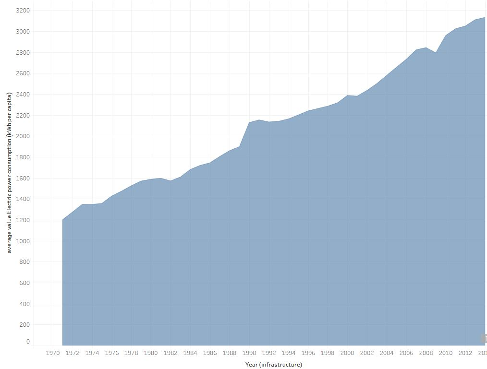
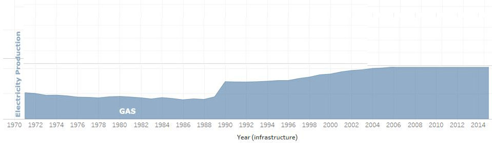

This is a graph of worldwide energy use over time.
Assignment 2: Exploratory Data Analysis
Ben Cederlind
Dataset
Initial Analysis Questions
- QUESTION_1 Which source of energy is the most used today?
- QUESTION_2 Which countries use the most energy?
- QUESTION_3 Are servers the reason that they are using so much energy?
- ...
Discoveries & Insights


This is the amount of power lost over time worldwide.
This is the amount of coal production worldwide over time.

This is the amount of gas production worldwide over time.
This is the amount of hydroelectric production worldwide over time.
This is the amount of oil production worldwide over time.
This is the amount of nuclear production worldwide over time.
This is the amount of energy use per country.
This is the amount of mobile cell subscriptions per country.
This is the number of server per country.
Summary
First off it should be noted that the data ends at 2014 and solar energy is not included so it could be completely different now. I figured with the invention of computers energy use would spike and we can see that during the 90's when personal computers became more common. The amount of power lost over time worldwide was interesting because it looks like theres quite an overhead for energy lost, it looks like 70% is lost which is really, really bad. Coal has been going up, corresponding with total energy use which might show that coal is a primary energy source. Gas spiked in the 90's which might correspond to the computer/tech revolution around that time. I would imagine they made more of what they already knew. Hydroelectric power has gone down over time, to me it seems hydroelectric energy would be the cleanest energy but because of the demands in water it makes sense it would go down. Oil has gone down drastically which makes sense since it is so rare, based on the chart it looks like this was a primary source of energy from early on, so i imagine alot of it was wasted in the past. Nuclear has gone up over time and has now gone down a bit which I find strange, but it is probably due to the extreme risks associated with nuclear energy. If we look at average energy use per country we see that iceland and norway are at the top which is strange since these countries are so remote. Probably some kind of secret stuff there. I wanted to see if mobile cell use or server use would explain this phenomenom but it did not. It looks like mobile cell subscriptions corresponds with population (i have no references for this but we all know that china and india have trouble with population control). The largest number of servers is in the united states. I kind of expected that remote servers would be setup in iceland or norway and that would explan the energy spike but I was wrong here.